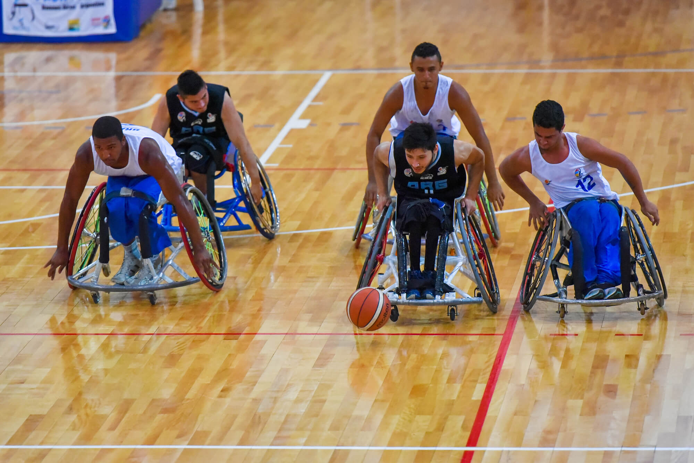
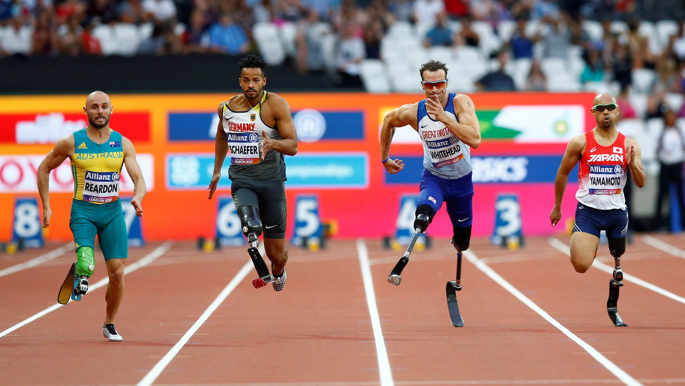

ESPORTES
A IMPORTANCIA DO ESPORTE PARA DEFICIÊNTES
Que praticar esportes é fundamental para a saúde, todo mundo sabe, mas para pessoas com deficiência, a prática é ainda mais importante. As diversas modalidades melhoram a condição cardiovascular de quem as pratica, aprimora a força, a agilidade,a coordenação motora, o equilíbrio e o repertório motor. Além disso, o esporte proporciona a oportunidade de sociabilização e torna quem tem deficiência mais independente, melhorando a autoconfiança e elevando a autoestima. Existem alguns critérios na hora da adaptação da modalidade. É aconselhável que o espaço (quadra, campo, pista, etc.) seja limitado e bem sinalizado, sem qualquer tipo de obstáculo que possa dificultar a locomoção dos atletas. Os materiais utilizados também devem ser apropriados para cada tipo de modalidade e deficiência. Além disso, algumas regras são alteradas para que atendam melhor ao perfil e às limitações de cada deficiência para que se tenha o máximo de igualdade entre os atletas.
Confira abaixo algumas das modalidades mais usuais e melhor adaptáveis, de acordo com a deficiência física:
- Atletismo
- Basquete em Cadeira de Rodas
- Canoagem
- Ciclismo
- Natação


Foto: FIBA / Divulgação | Basquete em cadeira de rodas

Campeonato Mundial de Atletismo Paralímpico em Londres